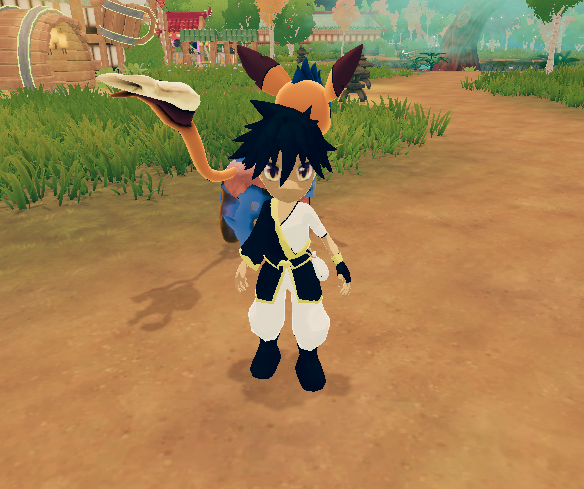
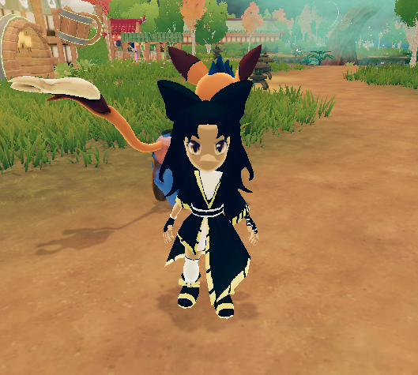
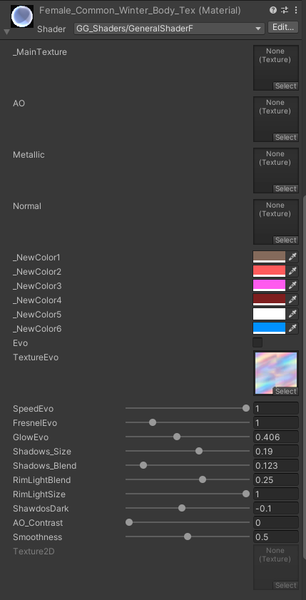
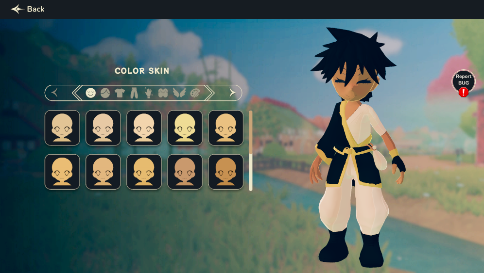
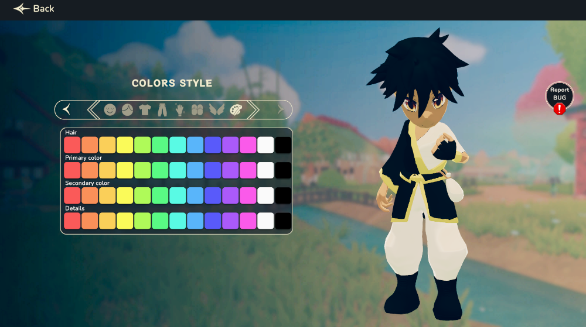

Back pack
Shinsei Vault System
The data of the shinsei vault it's recieved or created and uploaded by the PlayerDataManager.cs. In the InitPlayerData() we check if we already have data in playfab to download, if we do we download it and set it. If we don't we use the method FillPlayerData() to create new data for the player, including the shinsei vault.
The class ShinseiVaultController.cs it is the manager class of the majority the shinsei vault logic in game. The flow starts when the user request to see the shinsie vault. The vault is drawn an set with the data of the user that is located in the PlayerDataManager.cs. Upon this, we create a callback to the method OnVaultShinseiSelected() where we basically select it and then store it in a temp shinsei, if we select another shinsei then we swapped them and update the player data in the server.
Shinsei Card exchange system
The data of the shinsei's(and also it's cards) it's recieved or created and uploaded by the PlayerDataManager.cs. In the InitPlayerData() we check if we already have data in playfab to download, if we do we download it and set it. If we don't we use the method FillPlayerData() to create new data for the player, including the shinsei.
CardManagementController.cs it's the class that manges all the shinsei card visualization and exchange. The flow starts in the method InitCardManager() where it initalizes all the cards in the inventory and all the cards on the shinseis. Also sets some information like the shinsei type in the background and the images and stats of the shinseis. Then in this same class we use a vairaty of methods like AddCardInDeck, RemoveCardInDeck, AddSelectedCard, etc to basically interchange the cards from the vault .
Ranking System
The class that manages the rank system is NewLeaderBoard.cs //TODO
Character Customization system
In sacred tails you can customize your character in a few of forms The first form is Genre, you can choose between male and female
Male:

Female:

Also you can change the color of clothes and model, in this first implementation only exist one sweat for each genre but the system works.
This system works using a single material that replicates over all parts of character avoiding big number of batches when render multiple players at time

The input values for this material is injected by script, the textures are injected using a script called MaterialReskin.cs
MaterialReskin.cs
The most important part of MaterialReskin.cs is the Init function, first create a texture and store in a list, first Difuse then normal, metallic and finally Ambien Oclusion after that create a new material and asign the new created textures, initialize the CharacterRecolor and apply that material to all parts of character like a torso, head, legs and arms
...
public void Init()
{
mergeTextures.Add(new Texture2D(skinList[0].Difuse.width, skinList[0].Difuse.height, skinList[0].Difuse.format, true));
mergeTextures[0].SetPixels(skinList[0].Difuse.GetPixels());
mergeTextures.Add(new Texture2D(skinList[0].Normal.width, skinList[0].Normal.height, skinList[0].Normal.format, true));
mergeTextures[1].SetPixels(skinList[0].Normal.GetPixels());
mergeTextures.Add(new Texture2D(skinList[0].Metallic.width, skinList[0].Metallic.height, skinList[0].Metallic.format, true));
mergeTextures[2].SetPixels(skinList[0].Metallic.GetPixels());
mergeTextures.Add(new Texture2D(skinList[0].AmbientOclusion.width, skinList[0].AmbientOclusion.height, skinList[0].AmbientOclusion.format, true));
mergeTextures[3].SetPixels(skinList[0].AmbientOclusion.GetPixels());
horizontalTextureSize = mergeTextures[0].width / horizontalSplitParts;
verticalTextureSize = mergeTextures[0].height / verticalSplitParts;
//Create new material
Material material = meshRenderers[0].material;
material.SetTexture(mainTexture, mergeTextures[0]);
material.SetTexture(normalMap, mergeTextures[1]);
material.SetTexture(metallicGloss, mergeTextures[2]);
material.SetTexture(ambientOclussion, mergeTextures[3]);
material.EnableKeyword("_NORMALMAP");
targetMaterial = material;
characterRecolor.Init(targetMaterial);
//Apply new material to all parts :D
for (int i = 0; i < meshRenderers.Count; i++)
meshRenderers[i].material = targetMaterial;
//Verify if split numbers are even
if (horizontalSplitParts % 2 != 0)
horizontalSplitParts += 1;
if (verticalSplitParts % 2 != 0)
verticalSplitParts += 1;
//Add the position of textures in a list
for (int i = 0; i < horizontalSplitParts; i++)
for (int a = 0; a < verticalSplitParts; a++)
texturePosition.Add(new Vector2Int(i * horizontalTextureSize, a * verticalTextureSize));
isInit = true;
}
...
CharacterRecolor.cs
Character recolor is in charge of set the _NewColor Parameters of material in a human conversion, first create a dictionary of convensions from PartOfCharacter to string and will be called using ChangeMaterialColors function, receives a part of character and desired color
public class CharacterRecolor : MonoBehaviour
{
private Dictionary<PartsOfCharacter, string> materialColor = new Dictionary<PartsOfCharacter, string>() {
{PartsOfCharacter.SKIN,"_NewColor1"},
{PartsOfCharacter.HAIR,"_NewColor2"},
{PartsOfCharacter.PRIMARY_COLOR,"_NewColor3"},
{PartsOfCharacter.SECONDARY_COLOR,"_NewColor4"},
{PartsOfCharacter.DETAILS,"_NewColor6"},
{PartsOfCharacter.HANDS,"_NewColor5"},
{PartsOfCharacter.LEGS,"_NewColor5"}
};
private List<Material> newMaterials = new List<Material>();
public void Init(Material target)
{
if (!newMaterials.Contains(target))
newMaterials.Add(target);
if (lastColor != null)
ChangeMaterialColors(lastPart, lastColor);
}
private PartsOfCharacter lastPart;
private Color lastColor;
public void ChangeMaterialColors(PartsOfCharacter part, Color color)
{
lastPart = part;
lastColor = color;
foreach (var material in newMaterials)
material.SetColor(materialColor[part], color);
}
}
Each part of character have a UI panel designed for change material values by user and replicate that to all players

Skin manipulate the _NewColor1 parameter of material using predesigned values but you can use any value that you need

Color manipulate the other parameters that be asigned to the clothes and details
And finally the charge of change 3D models is
BodyStyle.cs
public class BodyStyle : MonoBehaviour
{
public List<BodyPartDressable> bodyParts = new List<BodyPartDressable>();
[System.Serializable]
public class BodyPartDressable
{
[SerializeField] string name;
[SerializeField] PartsOfCharacter part;
[SerializeField] List<GameObject> possibleParts = new List<GameObject>();
[SerializeField] List<GameObject> possiblePartsMale = new List<GameObject>();
public void SelectObject(int index, bool isLocal = false)
{
for (int i = 0; i < possibleParts.Count; i++)
possibleParts[i].gameObject.SetActive(false);
possibleParts[index].SetActive(true);
for (int i = 0; i < possiblePartsMale.Count; i++)
possiblePartsMale[i].gameObject.SetActive(false);
possiblePartsMale[index].SetActive(true);
if (isLocal)
CharacterStyleController.UpdatePartOfCharacter(part,index);
}
}
}
This script store the all posible parts of character and allow to change them using the function called SelectObject
The change hair is an example of Body Style
The combination of all systems allow the player change style